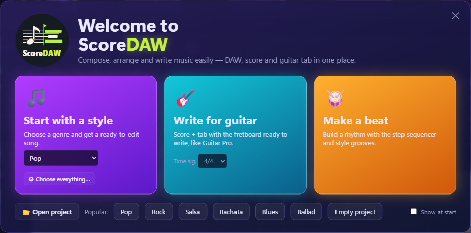
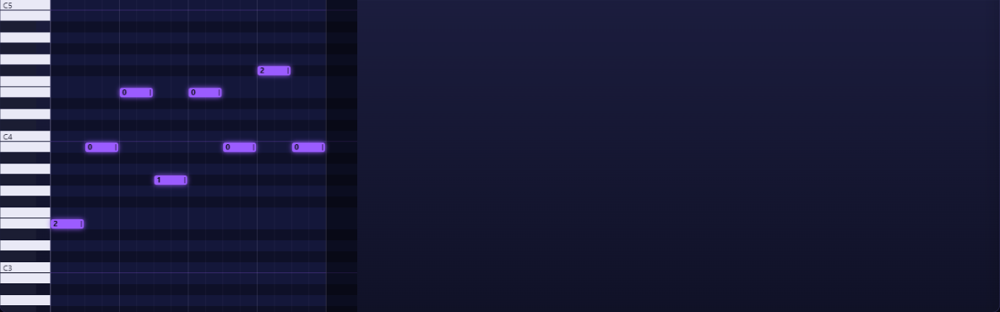
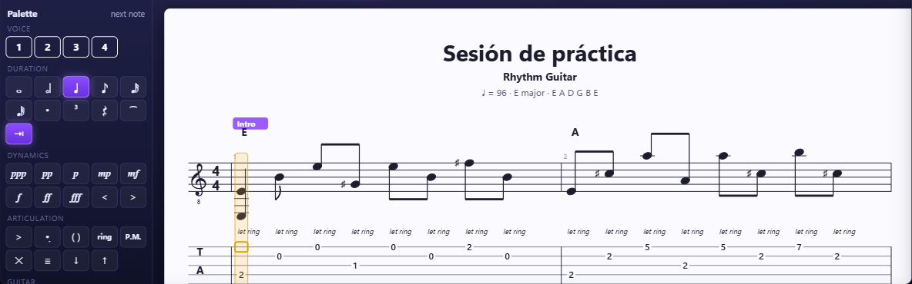
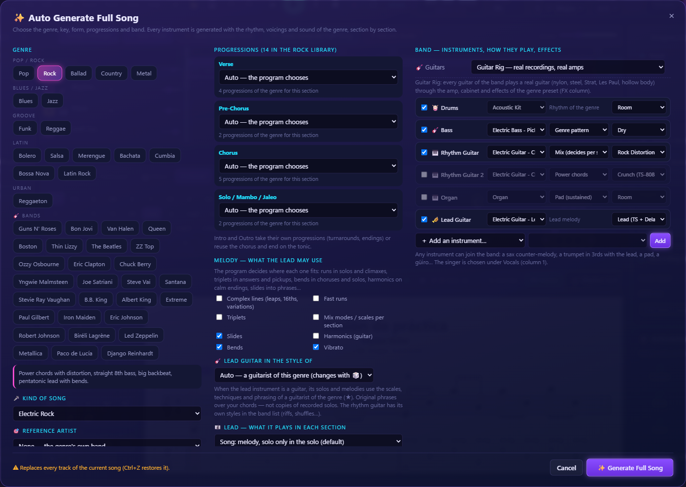
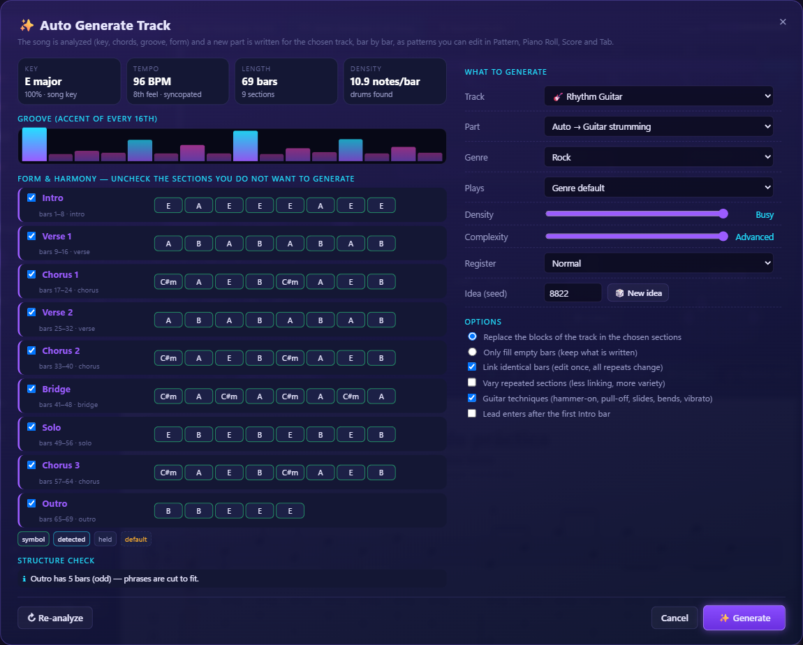
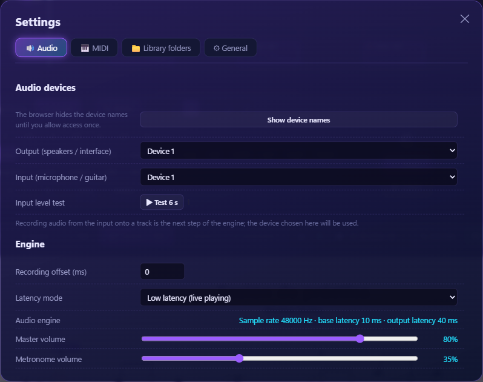

Barra superior
Menús, archivo, deshacer, transporte, contador, tempo, tonalidad, compás, tamaño de interfaz y modos Simple / Pro.
Escribe, genera, graba y mezcla una canción. Usa el índice para aprender por pasos o localizar un control. Los nombres en negrita coinciden con los que verás en la interfaz en inglés.


Menús, archivo, deshacer, transporte, contador, tempo, tonalidad, compás, tamaño de interfaz y modos Simple / Pro.
Busca y preescucha sonidos, instrumentos, patrones, ritmos, progresiones, presets y efectos. Arrastra elementos sobre su destino.
Vista de pistas y bloques en el tiempo. Contiene Add Track, generación, grabación y zoom del arreglo.
Elige Fretboard, Piano o Chords, la duración y si quieres escribir o escuchar.
Pattern, Piano Roll, Score, Tab, Score + Tab, Mixer y Generator.
Parámetros de la pista, el bloque o la nota seleccionada. Configura sonido, grabación, MIDI y efectos.
La barra inferior explica el control bajo el puntero. Alt+1 a Alt+5 pliegan los paneles y Alt+0 recupera la disposición. Usa Pro para mostrar los controles avanzados.
El contador muestra tiempo, compás, pulso y posición. En reproducción, la partitura se desplaza para seguir la línea rosa y el rack resalta el paso y los golpes de batería que suenan. Ajusta Tempo, Key (nota y modo), Time Sig. y el metrónomo en la barra superior.
Si la aplicación pregunta qué hacer con los bloques, elige conservar los compases para recortar o rellenar las barras, o conservar la música en el tiempo para mover sus divisiones. Revisa el resultado antes de guardar. Puedes deshacer la operación.
| Pestaña | Qué puedes hacer |
|---|---|
| Sounds | Kits, instrumentos y sonidos de percusión disponibles. Escucha un sonido o arrástralo a la pista, al Sound Slot o al nombre de un pad. |
| Generators / Synths | Presets de síntesis, sampler, modelos de cuerdas, teclados y percusión. Añádelos al rack o cambia el instrumento de un canal. |
| Folders | Conecta una carpeta para explorar tus sonidos. Tras recargar, usa Reconnect si el navegador solicita acceso. Con el menú contextual puedes crear un instrumento por muestras o un kit a partir de sus nombres. |
| Patterns / Rhythms | Reutiliza patrones y grooves. Arrastra un patrón al arreglo o carga un ritmo desde el selector Groove… del rack. |
| Chords | Inserta acordes y progresiones en el cursor o arrástralos al editor. |
| Presets / Effects | Aplica configuraciones de instrumentos y efectos. Revisa la cadena resultante en el Inspector o el Mixer. |
| Favorites | Filtra los elementos que hayas marcado como favoritos. Usa el campo de búsqueda para localizar instrumentos, ritmos y acordes. |
Los paquetes opcionales amplían Sounds. Si aparece el aviso de paquetes sin construir, puedes seguir usando los instrumentos incluidos y las carpetas conectadas. En la copia de desarrollo, el proyecto incluye Build Sound Packs.cmd para preparar las bibliotecas compatibles que tengas instaladas.
Patrones vinculados. Un bloque con ×N comparte sus notas o golpes con otros bloques. Usa Make unique antes de hacer una variación que deba sonar en un solo sitio.
Los clips de audio pueden dividirse, invertirse y recibir fundidos desde el menú contextual. S divide en el cursor cuando el arreglo tiene el foco. La pista de audio y el patrón de notas se editan en sus respectivos controles.
Elige un traste y cuerda. Activa Write para insertar la nota en el cursor. Con Shift puedes escribir un acorde. El selector de escala y Show scale marcan las notas de referencia.
Toca las teclas del panel o usa el teclado del ordenador. El rango cambia con [ y ]. Activa Write y elige la duración para colocar notas.
Selecciona raíz, tipo y disposición del acorde. Escúchalo y colócalo en el cursor o úsalo como referencia para la progresión. Shift+1 a Shift+7 recorre los grados de la tonalidad.
Escoge duración antes de escribir. Si ya hay notas seleccionadas, puedes cambiar sus valores desde la paleta de partitura. La misma nota se refleja en los demás editores.


En batería, pulsa una celda para activar o quitar un golpe. Shift aplica el acento. El nombre de un pad permite escucharlo y el menú contextual permite cambiar su sonido. En canales melódicos elige Step note (raíz del acorde, acorde completo, raíz de la tonalidad u octava) y duración. Clear bar vacía la parte del canal y el menú del patrón permite renombrar, clonar, cambiar longitud, colocar o borrar.

Pulsa un espacio para añadir una nota. Arrastra una nota para moverla y su borde derecho para ajustar duración. Shift añade notas a la selección. Clic derecho borra. Usa los controles para cuantizar a semicorchea, transponer por semitonos u octava y cambiar la velocidad de las notas en la franja inferior.

El ancho de cada compás se ajusta a sus notas y símbolos. Las figuras rápidas pueden agruparse por pulso. Un compás especialmente denso puede requerir desplazamiento horizontal. Renombra la canción con Edit title o File → Song title.
Crea el arreglo completo con secciones y pistas. Ctrl+Shift+G.
Escribe una parte que encaje en la canción abierta. Ctrl+G.

Generar la canción completa reemplaza el arreglo activo. Guarda tu proyecto si quieres conservarlo. Puedes volver con Ctrl+Z.

| Bloque | Controles |
|---|---|
| Track | Nombre, volumen, panorama y estado de la pista. |
| Sound Slot | Motor e instrumento, botón Listen y acceso al Rig disponible. Arrastra un instrumento o una muestra para asignarlo. |
| Selected Block | Propiedades del bloque de patrón o audio seleccionado en el arreglo. |
| Recording & MIDI Out | Armar entrada y buscar puertos MIDI, elegir salida y canal. |
| Articulations / Guitar Techniques | Selecciona notas para aplicar la técnica. Ajusta el rango de bend y el tiempo de slide. El Rig contiene controles adicionales. |
| Pedalboard (Track FX) | Enciende o apaga pedales y ajusta sus parámetros. Los Rigs tienen sus propios efectos. |
| Note Properties | Propiedades de la selección. La selección se comparte entre los editores. |
| Plugins (VST3 / CLAP) | Disponible cuando el motor nativo de Windows está activo. Permite cargar y editar plugins externos. |

Equilibra volumen y panorama, escucha un canal con Solo, compara con y sin efectos y ajusta los envíos de reverberación y delay. Empieza bajando pistas que dominan la mezcla y vigila el medidor maestro para evitar saturación.
Para automatizar, pulsa A en el arreglo hasta mostrar el carril de volumen o panorama. Haz clic para añadir puntos, arrastra para ajustar y usa clic derecho para borrar. La automatización se aplica al reproducir y exportar.

En 3x Osc ajusta forma de onda, mezcla y afinación de osciladores, filtro, envolvente ADSR, LFO y glide según el preset. En Sampler asigna muestras o zonas y revisa su nota raíz. En el modelo de cuerda ajusta timbre, ataque, decaimiento y técnicas.
Guitar Rig combina instrumento, pastilla o toma, amplificador, caja, micrófono, EQ y efectos. Piano Rig ajusta tipo de teclado, pedal, cuerdas, amplificador y efectos según el modelo. Wind Rig ofrece articulación, respiración, vibrato y mute según el instrumento. Si se están cargando grabaciones, algunos motores pueden usar el modelo ligero durante la espera.
Con la edición de escritorio y su motor nativo disponible, usa Plugins (VST3 / CLAP) en el Inspector. Selecciona el plugin en la pista, abre su editor y guarda el proyecto para conservar los ajustes. La versión web ofrece sus motores internos, muestras y MIDI Out.
Para disparar un sintetizador externo, busca salidas en Inspector → Recording & MIDI Out, elige puerto y canal y decide si se oye también el motor interno. El canal 10 se usa convencionalmente para batería General MIDI.

| Salida | Qué contiene y qué elegir |
|---|---|
Proyecto .sdaw.json | Arreglo, pistas, notas, parámetros y muestras utilizadas. Usa Save as para conservar una copia independiente y Open para recuperarla. |
| WAV / MP3 | Mezcla de audio. Selecciona formato, tasa de muestreo, profundidad del WAV o bitrate del MP3. La normalización es opcional. Activa Stems para obtener un WAV por pista en ZIP. |
| MIDI | Notas, tempo, compás y metadatos de arreglo. Configura las opciones de batería y repeticiones según el destino. El DAW receptor asignará sus propios instrumentos a las notas. |
| MusicXML | Partitura editable en un programa compatible. Elige pistas y si quieres incluir símbolos de acordes y pentagrama de tablatura. |
| Print / Save as PDF | Selecciona pistas y vista Score, Tab o Score + Tab. Abre la vista de impresión del navegador y elige imprimir o guardar como PDF. |
Si necesitas volver a editar, guarda también el archivo de proyecto. El autoguardado del navegador ayuda a retomar la sesión en el mismo perfil, mientras que el archivo te permite abrirla en otro equipo.

Pulsa Play para activar el audio del navegador. Comprueba dispositivo de salida, volumen maestro, Mute/Solo y que el cursor esté en un lugar con bloques. Si elegiste un instrumento con grabaciones, espera a que termine la carga o prueba el motor ligero.
Permite ventanas emergentes para ScoreDAW, elige una pista melódica y vuelve a abrir File → Print / Save as PDF.
Prueba View → Reset panel layout o Alt+0. Ajusta el tamaño con Ctrl +, Ctrl − o Ctrl+0. Algunos controles aparecen en modo Pro o al seleccionar una pista o nota compatible.
ScoreDAW 0.2.0. Creado 100 % con IA usando Claude (Anthropic) y ChatGPT (OpenAI), bajo la dirección de Roberto. El código de ScoreDAW se distribuye bajo licencia MIT. Cada componente y grabación de terceros conserva su licencia.
| Recurso | Autoría y licencia |
|---|---|
| Grabaciones de guitarra | FreePats, entrada directa estilo Strat (CC0 1.0). Gestalt LUR, Strat alternativa (MIT). Karoryfer Samples / D. Smolken, Emilyguitar y Shinyguitar (CC0 1.0). Jeff Learman, Martin HD-28 (CC0 1.0). quartertone, nylon del pack 11573 de Freesound, editado por N. Brosowsky (CC BY 3.0). ScoreDAW usa subconjuntos convertidos y recortados. |
| Amplificadores y respuestas de impulso | TONE3000, motor Neural Amp Modeler WebAssembly, capturas y respuestas (MIT según los avisos del proyecto). Núcleo Neural Amp Modeler de Steven Atkinson. |
| Grabaciones de piano | Alexander Holm, Salamander Grand Piano V3 (CC BY 3.0). Jeff Learman, jRhodes3d (CC BY-NC-SA 4.0). Greg Sullivan, Wurlitzer EP200 con mapeo SFZ de kinwie (CC BY 3.0). |
| Grabaciones de viento | Versilian Studios, Samuel Gossner y colaboradores, saxo tenor VCSL y trompeta de VSCO-2 Community Edition interpretada por Simon Hutchinson (CC0 1.0). |
| Exportación MP3 | lamejs, adaptación de LAME, con licencia LGPL-3.0 según los avisos del proyecto. |
| Edición Windows | Steinberg, VST 3 SDK (MIT). Comunidad free-audio, CLAP (MIT). Microsoft, WebView2 SDK (licencia del SDK). |
| Paquetes opcionales | Integraciones con las bibliotecas de LiveReplica y Lemon-Studio. Los recursos de audio importados o convertidos desde bibliotecas externas mantienen las condiciones de sus autores. |
En la copia del proyecto, consulta LICENSE, los avisos CREDITS.md de Guitar Lab, Piano Lab y Wind Lab, y desktop/licenses/THIRD_PARTY_NOTICES.md para el detalle por componente.